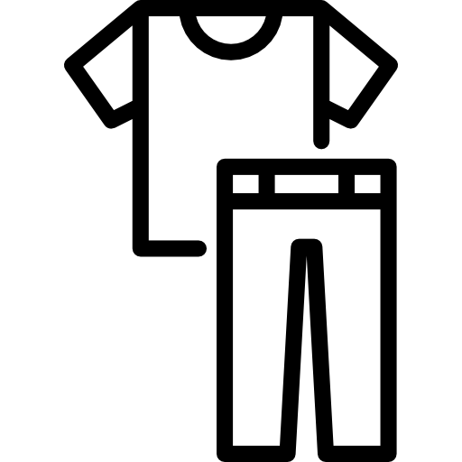
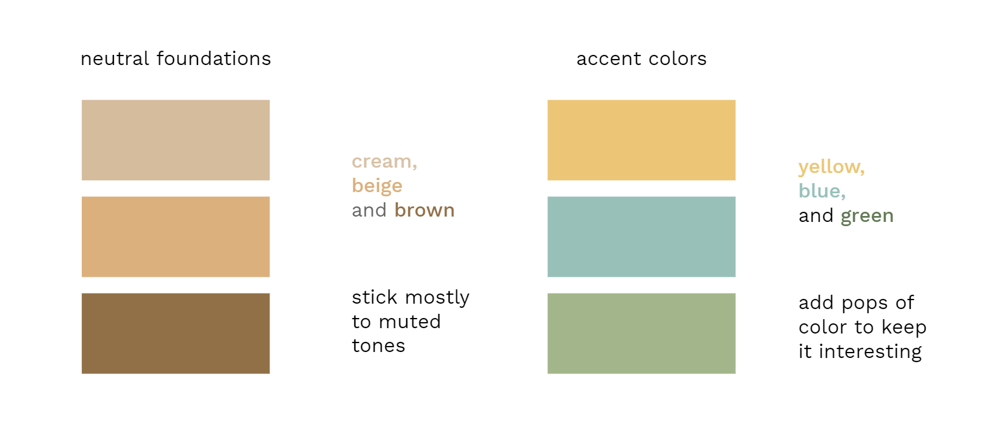
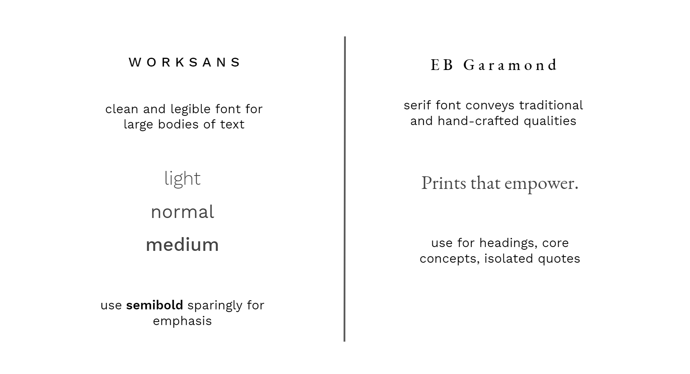

Amenuveve
Website redesign
View Website
Type
UI/UX
Tools
Wix editor
Timespan
July–August 2020
Background
Amenuveve is an international nonprofit dedicated to serving the Ghanaian village of Woadze Tsatoe.
Over the summer, I worked with the organization on its branding and marketing efforts. Due to Covid-19, we recognized that a stronger online presence would be crucial to its current operations and future growth.
Problem
Evaluating Amenuveve's existing website, I could tell that it was unfinished and lacked much of the functionality needed for a positive user experience.

1) an outdated profile
The website was built around Amenuveve's earliest project: a batik center where the village women create traditional block printed fabrics. It did not cover newer initiatives such as a vegetable farm and a scholarship program.
Research
In preparation for a redesign, I spoke to potential users to understand their needs and desires. I concluded that the website should serve three main functions:
Documentation
to keep record of the organization's projects and impacts
Donation
to enable interested individuals to express their support

Retail
to continue being an outlet for the batik center's products
Additionally, I studied the websites of popular non-profits, such as Charity:Water and The Little Market, to get a sense for effective layouts and design conventions.
I noticed that these organizations frequently shared portraits and anecdotes of the people they served to create a personal connection with their audience. Good storytelling could similarly help Amenuve to form meaningful and lasting relationships with its users.
Branding
Before working on the actual website, I laid down some design guidelines to ensure consistency across pages and continuity over time.

The original yellow which permeated the site felt too bright and harsh on the eyes, so I selected warmer, muted tones that reflected the natural and earthy quality of the village huts and the surrounding area. The fonts represent the modern and traditional aspects of the village: the hope for socio-economic advancement as well as cultural preservation.

With help from several individuals, I compiled the text, photos, and other media to populate the new pages that I had in mind.
🔨 This page is under construction...
Frankly, I'm still figuring out how to implement a carousel via HTML. Explore the live site Amenuveve.org, or hop over to my old portfolio for a full product demo!